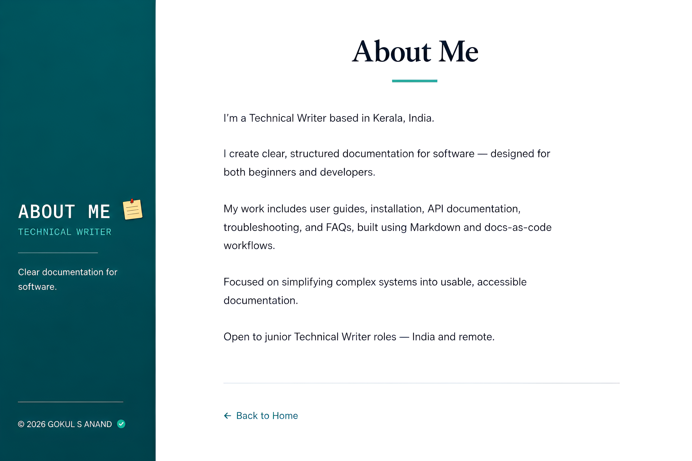

I create technical documentation focused on clarity, usability, and user experience. My work includes API documentation, installation guides, troubleshooting documentation, FAQs, and user guides for developer and productivity tools.
I use Markdown, GitHub, REST APIs, JSON, and modern documentation workflows to build structured and easy-to-understand technical content for both users and developers.
